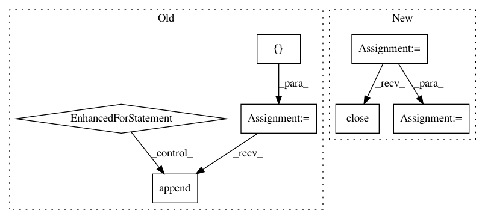

3bf5f2de89807642dcd1e030e45226ff3944779b,database_manager.py,DatabaseManager,get_everyone_elses_recent_submssions,#DatabaseManager#Any#Any#Any#,342
Before Change
}
}]
submissions = []
for submission in self.db.submissions.aggregate(pipeline):
if submission["username"] == username:
continue
submissions.append(submission)
return submissions
def get_filename(self, submission_id):
Get the filename that is used by S3 based on submission_id
After Change
if end_time is None:
end_time = datetime.datetime.utcnow()
cursor = self.postgres_db.cursor(cursor_factory=psycopg2.extras.RealDictCursor)
query = "SELECT id FROM submissions WHERE round_id = "{}" AND user_id != "{}" AND inserted_at < "{}" ORDER BY inserted_at DESC".format(round_id, user_id, end_time)
cursor.execute(query)
results = cursor.fetchall()
cursor.close()
return results
def get_date_created(self, submission_id):
Get the date create for a submission
In pattern: SUPERPATTERN
Frequency: 3
Non-data size: 7
Instances
Project Name: numerai/submission-criteria
Commit Name: 3bf5f2de89807642dcd1e030e45226ff3944779b
Time: 2017-11-10
Author: xander@numer.ai
File Name: database_manager.py
Class Name: DatabaseManager
Method Name: get_everyone_elses_recent_submssions
Project Name: rusty1s/pytorch_geometric
Commit Name: cce4382f73d0976fb94b003949acd668377a0869
Time: 2020-04-03
Author: j-magnusson@t-online.de
File Name: torch_geometric/utils/geodesic.py
Class Name:
Method Name: geodesic_distance
Project Name: rusty1s/pytorch_geometric
Commit Name: 17e56b9100275068c7ad0e74c0bf247866da846f
Time: 2020-05-31
Author: j-magnusson@t-online.de
File Name: torch_geometric/utils/geodesic.py
Class Name:
Method Name: geodesic_distance